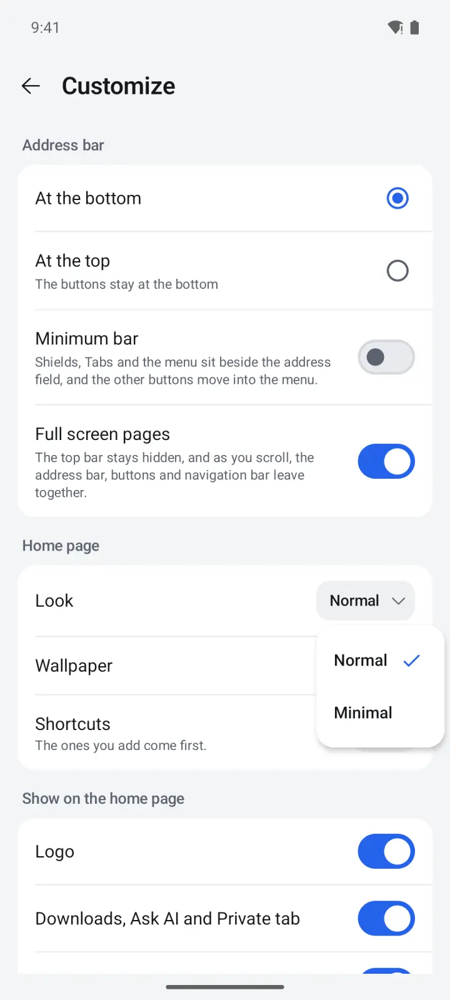
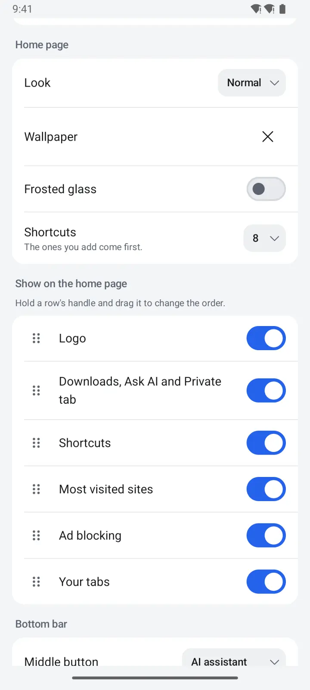
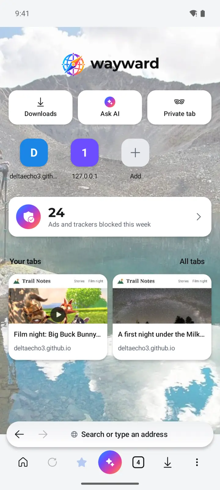
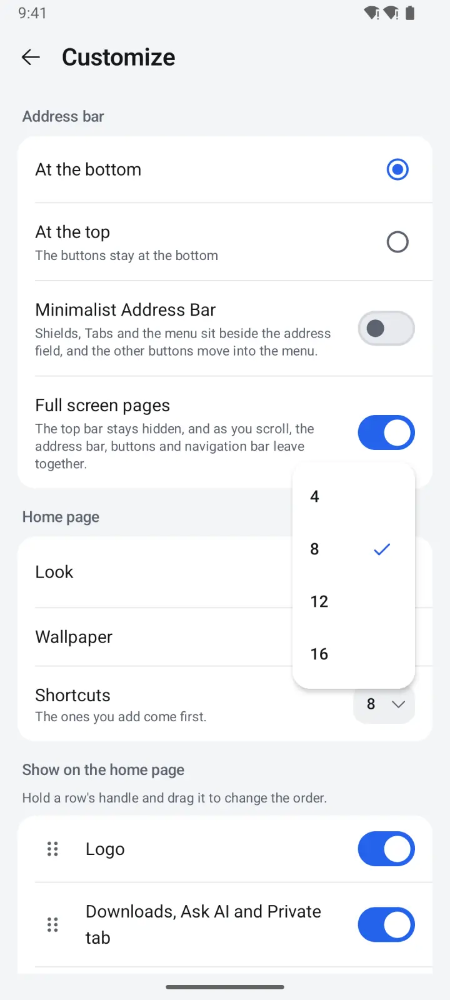
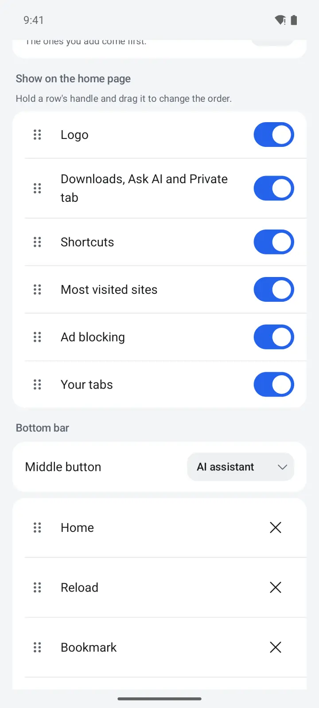
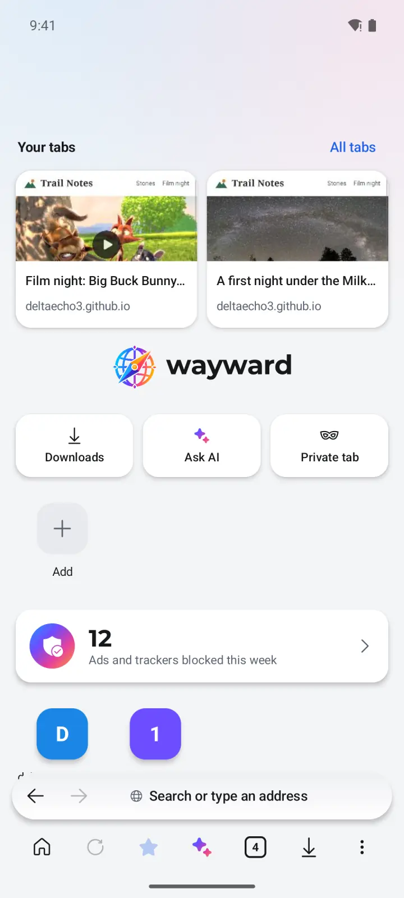
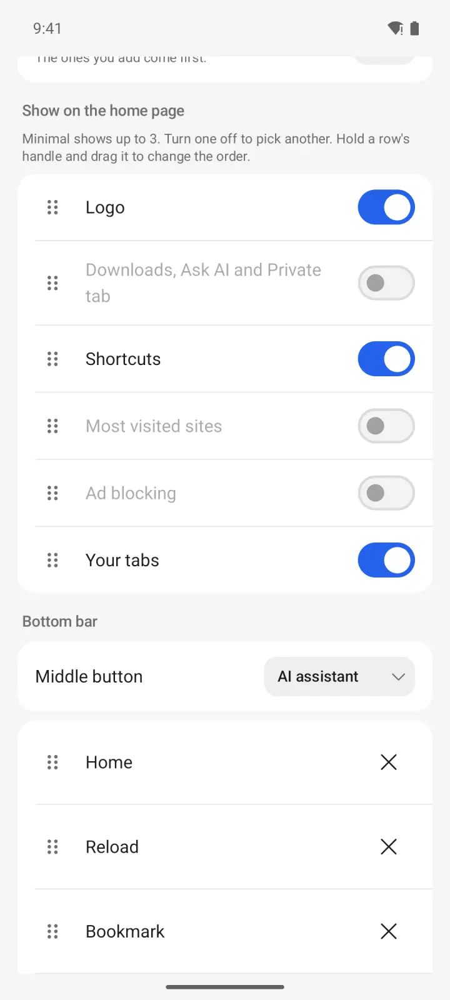

Change how the home page looks
How-to
Tap Home or open a new tab to see the home page. Give it your own picture, pick how many shortcuts it has, and choose what's on it.
All of this is in Settings > Customize, under Home page. For using the home page itself (adding, renaming and removing shortcuts, the blocked counter), see Use the start page.
Normal or Minimal
Look sets the overall style:
- Normal, by default: colorful buttons and tiles.
- Minimal is quieter: neutral greys, round shortcuts, and three parts at most (see below). Its buttons are plain, and the blocked count is one line.


Your own picture
- Tap Wallpaper and pick a photo.
- The home page shows it behind everything, with its words in light or dark, whichever reads best on your picture.
- Frosted glass softens the picture so the shortcuts stand out.
Later, tap Wallpaper again for another photo, or tap its X to remove the wallpaper.
Wayward keeps its own copy of the picture, inside the app, without the photo's location or camera details. It's only drawn on Wayward's own home page and never reaches a website.


If the photo won't work, Wayward says That picture can't be used. Try another one. or That picture is too big. Try a smaller one.
How many shortcuts
Shortcuts sets how many tiles the home page has: 4, 8 (by default), 12 or 16. Shortcuts you add yourself come first, then the sites you visit most. A private tab's start page shows its own shortcuts by the same number.

What's on it, and in what order
Show on the home page has a switch for each part, in the order the home page shows them:
- Logo: Wayward's globe and name.
- Downloads, Ask AI and Private tab: three quick buttons for those. With the assistant off the bar, it's Downloads and Private tab.
- Shortcuts: the shortcuts you add yourself. Off, the private start page's own shortcuts are hidden too.
- Most visited sites: tiles for the sites you visit most, from your history.
- Ad blocking: how many ads and trackers Wayward blocked this week. In the Normal look it's the same switch as Ad and tracker counter in Settings > Tabs and History.
- Your tabs: your other open tabs, with All tabs to see them all.
To change the order, hold the six dots at the start of a row and drag it up or down (with TalkBack, each row has actions to move it one place, such as Move Logo down). The order is the same in both looks. When Shortcuts comes right before Most visited sites, they share one set of tiles, as Wayward comes; put them apart and each gets its own.


The Minimal look has its own switches, and shows three parts at most: Logo, Shortcuts and Your tabs at first. With three on, the others wait, dimmed, until you turn one off. You can still move them.

Site icons
Further down Customize, under Start page, Site icons shows each site's own icon on its shortcut instead of a letter. Wayward asks a site for its icon when you visit it, never from a private or locked tab. Clearing your history deletes the icons.
If new tabs open on your search engine's page
All of this is about Wayward's own home page. If Settings > Tabs and History > New tabs open on is set to Search engine's page, new tabs and Home show your search engine's page instead, so none of these settings change what you see.